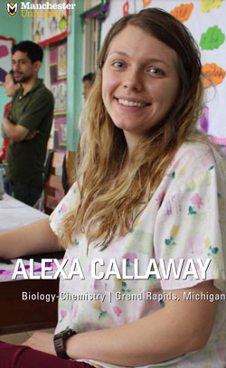
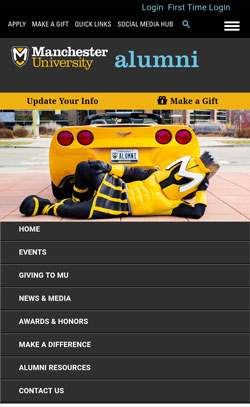

Work samples
-
WBOI Presents
A weekly web version of the NPR news program. I build the web version from an edited broadcast script, audio recording and I also update the WBOI Presents podcast.
-
Pharmacogenes
A resource site for Pharmacogenomics educators around the world. I created the site template and pages based on a design by my manager.
The site has changed a bit since my departure, here is an archived version. -
Sample page from Manchester University Admissions' annual Viewbook

The annual student profile publication for the admissions office. I created the template with direction from an admissions colleague. -
Social media directory
A simple icon list of links to official social media accounts around campus.
-
Social media hub pages
An archive of student profiles created by the marketing office. I modified the basic site template to create these pages and provided instructions for updating them.
-
Manchester University Alumni site

Alumni relations and giving site. I created new templates for this section and oversaw content migration into this site from a previously used CMS.